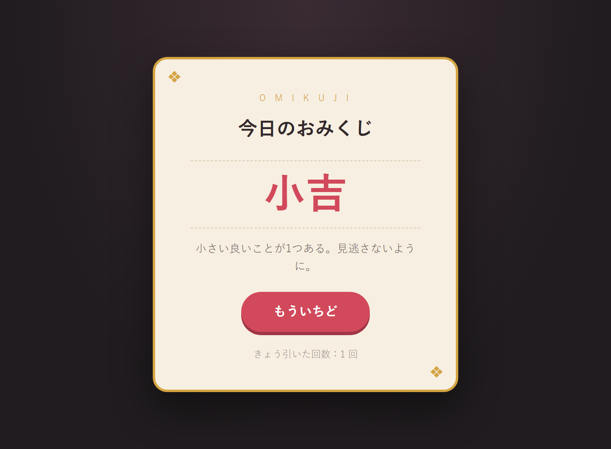
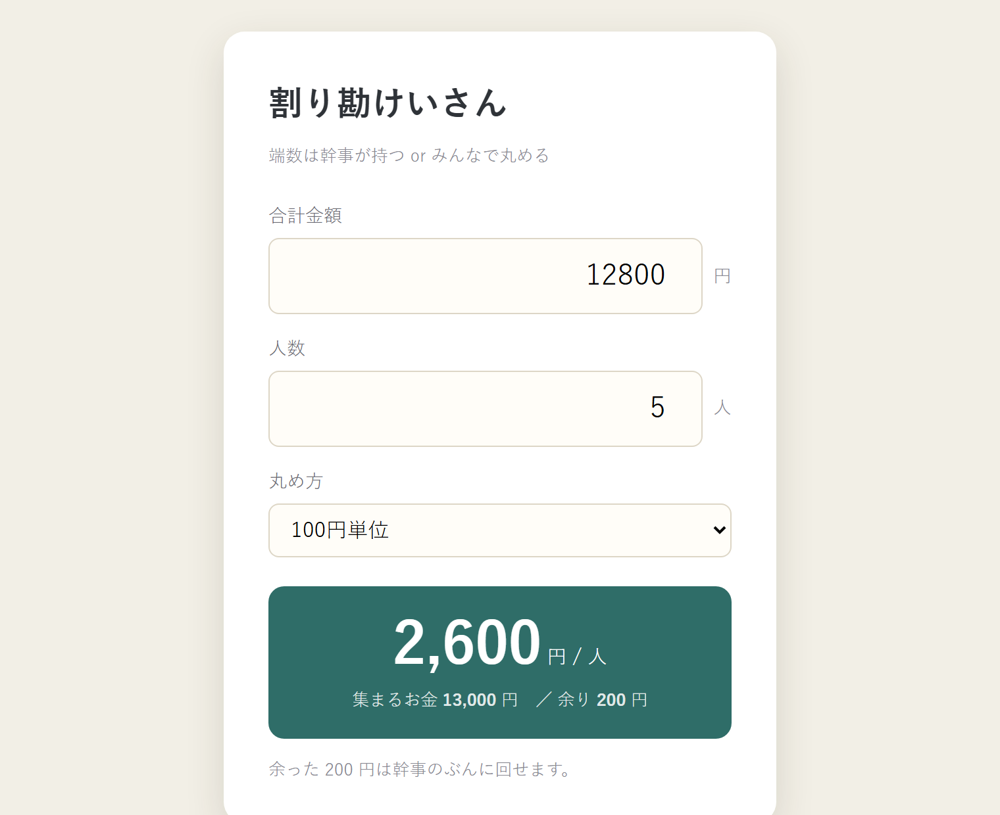
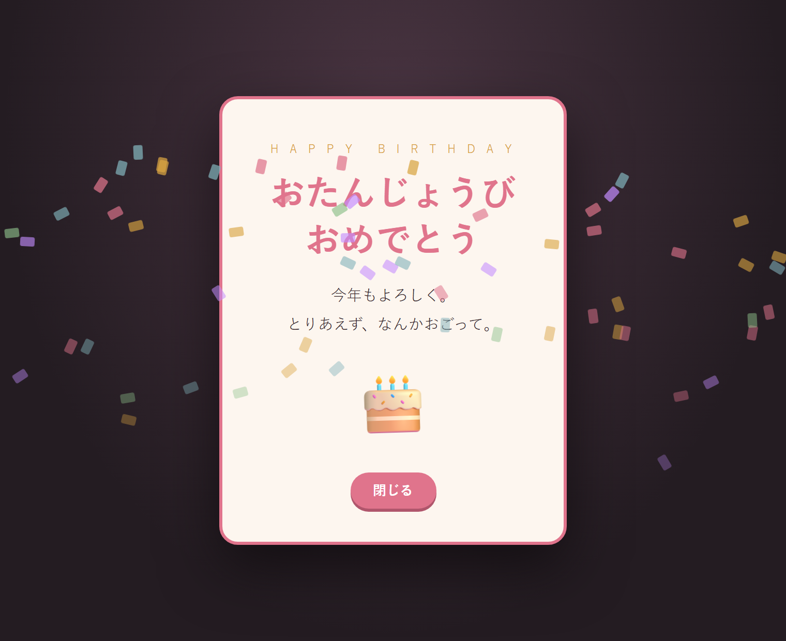
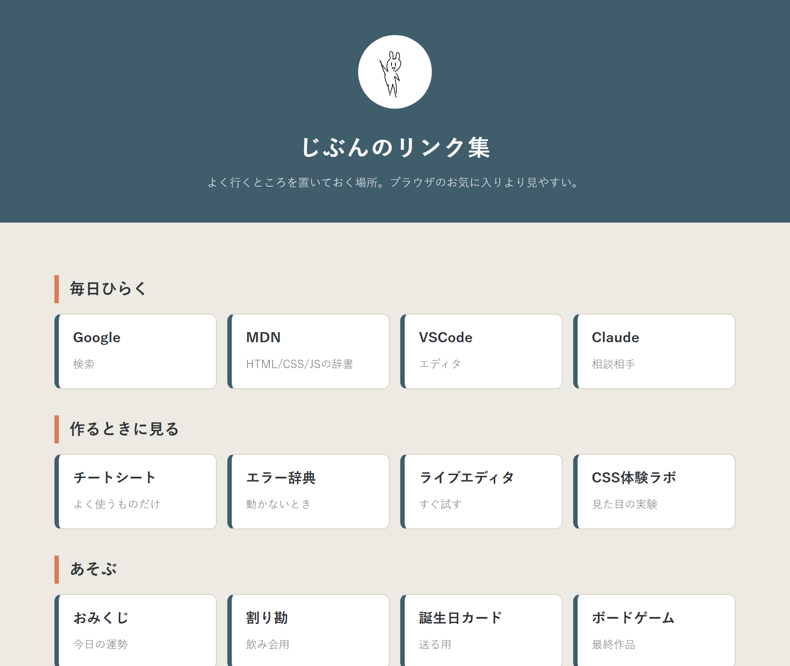

「習ったことで、結局なにが作れるのか」の答え。
どれも HTML・CSS・JavaScript だけ。この講座で出てくる範囲しか使っていない。
ボタンを押すとランダムに1つ出るだけ。配列・ランダム・setInterval・localStorage という、 よく使う4点がひととおり入っている。回数はブラウザに保存される。
ひらくKUJI の中身を自分たちのネタに全部入れ替える

実際に使えるやつ。入力欄の値を取って計算し直すだけだが、 100円単位で丸めるところが地味に便利。 飲み会でスマホから開けば普通に役立つ。
ひらく「あける」を押すと紙吹雪が降る。紙吹雪はJavaScriptが1枚ずつ作っているので、
数も色も変えられる。URLに ?name=うさぎ を付けると宛名が変わる。
new Audio() の行のコメントを外すだけ）

JavaScriptを1行も使っていない。HTMLとCSSだけでもここまで作れる。
よく行くサイトを並べておく自分用のページ。
grid-template-columns に auto-fill を使っているので、
画面幅に応じて列数が勝手に変わる。
web の中に置いて。
フォルダ名は好きに変えて大丈夫（半角英数字で）。../../ で外を向いているので、
移動したら赤字のリンクを自分のものに差し替えて。
→ ライブエディタで部分的に試す
→ 練習問題集の最終課題は「自分が使いたいものを作る」